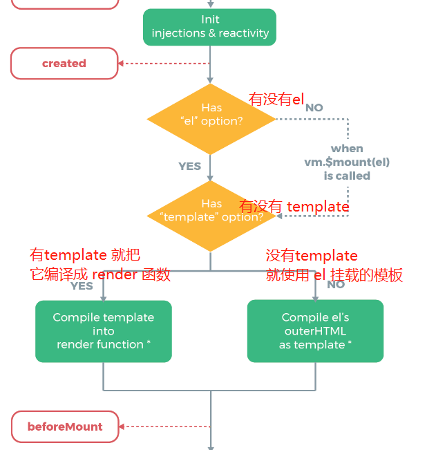

Vue 模板是如何编译的
参考答案
new Vue({
render: h => h(App)
})这个大家都熟悉，调用 render 就会得到传入的模板(.vue文件)对应的虚拟 DOM，那么这个 render 是哪来的呢？它是怎么把 .vue 文件转成浏览器可识别的代码的呢？
render 函数是怎么来的有两种方式
- 第一种就是经过模板编译生成 render 函数
- 第二种是我们自己在组件里定义了 render 函数，这种会跳过模板编译的过程
本文将为大家分别介绍这两种，以及详细的编译过程原理
认识模板编译
我们知道 <template></template> 这个是模板，不是真实的 HTML，浏览器是不认识模板的，所以我们需要把它编译成浏览器认识的原生的 HTML
这一块的主要流程就是
- 提取出模板中的原生 HTML 和非原生 HTML，比如绑定的属性、事件、指令等等
- 经过一些处理生成 render 函数
- render 函数再将模板内容生成对应的 vnode
- 再经过 patch 过程( Diff )得到要渲染到视图中的 vnode
- 最后根据 vnode 创建真实的 DOM 节点，也就是原生 HTML 插入到视图中，完成渲染
上面的 1、2、3 条就是模板编译的过程了
那它是怎么编译，最终生成 render 函数的呢？
模板编译详解——源码
baseCompile()
这就是模板编译的入口函数，它接收两个参数
template：就是要转换的模板字符串options：就是转换时需要的参数
编译的流程，主要有三步：
- 模板解析：通过正则等方式提取出
<template></template>模板里的标签元素、属性、变量等信息，并解析成抽象语法树AST - 优化：遍历
AST找出其中的静态节点和静态根节点，并添加标记 - 代码生成：根据
AST生成渲染函数render
这三步分别对应三个函数，后面会一一下介绍，先看一下 baseCompile 源码中是在哪里调用的
源码地址：src/complier/index.js - 11行
export const createCompiler = createCompilerCreator(function baseCompile (
template: string, // 就是要转换的模板字符串
options: CompilerOptions //就是转换时需要的参数
): CompiledResult {
// 1. 进行模板解析，并将结果保存为 AST
const ast = parse(template.trim(), options)
// 没有禁用静态优化的话
if (options.optimize !== false) {
// 2. 就遍历 AST，并找出静态节点并标记
optimize(ast, options)
}
// 3. 生成渲染函数
const code = generate(ast, options)
return {
ast,
render: code.render, // 返回渲染函数 render
staticRenderFns: code.staticRenderFns
}
})就这么几行代码，三步，调用了三个方法很清晰
我们先看一下最后 return 出去的是个啥，再来深入上面这三步分别调用的方法源码，也好更清楚的知道这三步分别是要做哪些处理
编译结果
比如有这样的模板
<template>
<div id="app">{{name}}</div>
</template>打印一下编译后的结果，也就是上面源码 return 出去的结果，看看是啥
{
ast: {
type: 1,
tag: 'div',
attrsList: [ { name: 'id', value: 'app' } ],
attrsMap: { id: 'app' },
rawAttrsMap: {},
parent: undefined,
children: [
{
type: 2,
expression: '_s(name)',
tokens: [ { '@binding': 'name' } ],
text: '{{name}}',
static: false
}
],
plain: false,
attrs: [ { name: 'id', value: '"app"', dynamic: undefined } ],
static: false,
staticRoot: false
},
render: `with(this){return _c('div',{attrs:{"id":"app"}},[_v(_s(name))])}`,
staticRenderFns: [],
errors: [],
tips: []
}看不明白也没有关系，注意看上面提到的三步都干了啥
ast字段，就是第一步生成的static字段，就是标记，是在第二步中根据ast里的type加上去的render字段，就是第三步生成的
有个大概的印象了，然后再来看源码
1. parse()
源码地址：src/complier/parser/index.js - 79行
就是这个方法就是解析器的主函数，就是它通过正则等方法提取出 <template></template> 模板字符串里所有的 tag、props、children 信息，生成一个对应结构的 ast 对象
parse 接收两个参数
template：就是要转换的模板字符串options：就是转换时需要的参数。它包含有四个钩子函数，就是用来把parseHTML解析出来的字符串提取出来，并生成对应的AST
核心步骤是这样的：
调用 parseHTML 函数对模板字符串进行解析
- 解析到开始标签、结束标签、文本、注释分别进行不同的处理
- 解析过程中遇到文本信息就调用文本解析器
parseText函数进行文本解析 - 解析过程中遇到包含过滤器，就调用过滤器解析器
parseFilters函数进行解析
每一步解析的结果都合并到一个对象上(就是最后的 AST)
这个地方的源码实在是太长了，有大几百行代码，我就只贴个大概吧，有兴趣的自己去看一下
export function parse (
template: string, // 要转换的模板字符串
options: CompilerOptions // 转换时需要的参数
): ASTElement | void {
parseHTML(template, {
warn,
expectHTML: options.expectHTML,
isUnaryTag: options.isUnaryTag,
canBeLeftOpenTag: options.canBeLeftOpenTag,
shouldDecodeNewlines: options.shouldDecodeNewlines,
shouldDecodeNewlinesForHref: options.shouldDecodeNewlinesForHref,
shouldKeepComment: options.comments,
outputSourceRange: options.outputSourceRange,
// 解析到开始标签时调用，如 <div>
start (tag, attrs, unary, start, end) {
// unary 是否是自闭合标签，如 <img />
...
},
// 解析到结束标签时调用，如 </div>
end (tag, start, end) {
...
},
// 解析到文本时调用
chars (text: string, start: number, end: number) {
// 这里会判断判断很多东西，来看它是不是带变量的动态文本
// 然后创建动态文本或静态文本对应的 AST 节点
...
},
// 解析到注释时调用
comment (text: string, start, end) {
// 注释是这么找的
const comment = /^<!\--/
if (comment.test(html)) {
// 如果是注释，就继续找 '-->'
const commentEnd = html.indexOf('-->')
...
}
})
// 返回的这个就是 AST
return root
}上面解析文本时调用的 chars() 会根据不同类型节点加上不同 type，来标记 AST 节点类型，这个属性在下一步标记的时候会用到
| type | AST 节点类型 |
|---|---|
| 1 | 元素节点 |
| 2 | 包含变量的动态文本节点 |
| 3 | 没有变量的纯文本节点 |
2. optimize()
这个函数就是在 AST 里找出静态节点和静态根节点，并添加标记，为了后面 patch 过程中就会跳过静态节点的对比，直接克隆一份过去，从而优化了 patch 的性能
函数里面调用的外部函数就不贴代码了，大致过程是这样的
- 标记静态节点(markStatic)。就是判断 type，上面介绍了值为 1、2、3的三种类型
- type 值为1：就是包含子元素的节点，设置 static 为 false 并递归标记子节点，直到标记完所有子节点
- type 值为 2：设置 static 为 false
- type 值为 3：就是不包含子节点和动态属性的纯文本节点，把它的 static = true，patch 的时候就会跳过这个，直接克隆一份去
- 标记静态根节点(markStaticRoots)，这里的原理和标记静态节点基本相同，只是需要满足下面条件的节点才能算作是静态根节点
- 节点本身必须是静态节点
- 必须有子节点
- 子节点不能只有一个文本节点
源码地址：src/complier/optimizer.js - 21行
export function optimize (root: ?ASTElement, options: CompilerOptions) {
if (!root) return
isStaticKey = genStaticKeysCached(options.staticKeys || '')
isPlatformReservedTag = options.isReservedTag || no
// 标记静态节点
markStatic(root)
// 标记静态根节点
markStaticRoots(root, false)
}3. generate()
这个就是生成 render 的函数，就是说最终会返回下面这样的东西
// 比如有这么个模板
<template>
<div id="app">{{name}}</div>
</template>
// 上面模板编译后返回的 render 字段 就是这样的
render: `with(this){return _c('div',{attrs:{"id":"app"}},[_v(_s(name))])}`
// 把内容格式化一下，容易理解一点
with(this){
return _c(
'div',
{ attrs:{"id":"app"} },
[ _v(_s(name)) ]
)
}这个结构是不是有点熟悉？
了解虚拟 DOM 就可以看出来，上面的 render 正是虚拟 DOM 的结构，就是把一个标签分为 tag、props、children，没有错
在看 generate 源码之前，我们要先了解一下上面这最后返回的 render 字段是什么意思，再来看 generate 源码，就会轻松得多，不然连函数返回的东西是干嘛的都不知道怎么可能看得懂这个函数呢
render
我们来翻译一下上面编译出来的 render
这个 with 在 《你不知道的JavaScript》上卷里介绍的是，用来欺骗词法作用域的关键字，它可以让我们更快的引用一个对象上的多个属性
看个例子
const name = '掘金'
const obj = { name:'沐华', age: 18 }
with(obj){
console.log(name) // 沐华 不需要写 obj.name 了
console.log(age) // 18 不需要写 obj.age 了
}上面的 with(this){} 里的 this 就是当前组件实例。因为通过 with 改变了词法作用域中属性的指向，所以标签里使用 name 直接用就是了，而不需要 this.name 这样
那 _c、 _v 和 _s 是什么呢？
在源码里是这样定义的，格式是：_c(缩写) = createElement(函数名)
源码地址：src/core/instance/render-helpers/index.js - 15行
// 其实不止这几个，由于本文例子中没有用到就没都复制过来占位了
export function installRenderHelpers (target: any) {
target._s = toString // 转字符串函数
target._l = renderList // 生成列表函数
target._v = createTextVNode // 创建文本节点函数
target._e = createEmptyVNode // 创建空节点函数
}
// 补充
_c = createElement // 创建虚拟节点函数再来看是不是就清楚多了呢
with(this){ // 欺骗词法作用域，将该作用域里所有属姓和方法都指向当前组件
return _c( // 创建一个虚拟节点
'div', // 标签为 div
{ attrs:{"id":"app"} }, // 有一个属性 id 为 'app'
[ _v(_s(name)) ] // 是一个文本节点，所以把获取到的动态属性 name 转成字符串
)
}接下来我们再来看 generate() 源码
generate
源码地址：src/complier/codegen/index.js - 43行
这个流程很简单，只有几行代码，就是先判断 AST 是不是为空，不为空就根据 AST 创建 vnode，否则就创建一个空div 的 vnode
export function generate (
ast: ASTElement | void,
options: CompilerOptions
): CodegenResult {
const state = new CodegenState(options)
// 就是先判断 AST 是不是为空，不为空就根据 AST 创建 vnode，否则就创建一个空div的 vnode
const code = ast ? (ast.tag === 'script' ? 'null' : genElement(ast, state)) : '_c("div")'
return {
render: `with(this){return ${code}}`,
staticRenderFns: state.staticRenderFns
}
}可以看出这里面主要就是通过 genElement() 方法来创建 vnode 的，所以我们来看一下它的源码，看是怎么创建的
genElement()
源码地址：src/complier/codegen/index.js - 56行
这里的逻辑还是很清晰的，就是一堆 if/else 判断传进来的 AST 元素节点的属性来执行不同的生成函数
这里还可以发现另一个知识点 v-for 的优先级要高于 v-if，因为先判断 for 的
export function genElement (el: ASTElement, state: CodegenState): string {
if (el.parent) {
el.pre = el.pre || el.parent.pre
}
if (el.staticRoot && !el.staticProcessed) {
return genStatic(el, state)
} else if (el.once && !el.onceProcessed) { // v-once
return genOnce(el, state)
} else if (el.for && !el.forProcessed) { // v-for
return genFor(el, state)
} else if (el.if && !el.ifProcessed) { // v-if
return genIf(el, state)
// template 节点 && 没有插槽 && 没有 pre 标签
} else if (el.tag === 'template' && !el.slotTarget && !state.pre) {
return genChildren(el, state) || 'void 0'
} else if (el.tag === 'slot') { // v-slot
return genSlot(el, state)
} else {
// component or element
let code
// 如果有子组件
if (el.component) {
code = genComponent(el.component, el, state)
} else {
let data
// 获取元素属性 props
if (!el.plain || (el.pre && state.maybeComponent(el))) {
data = genData(el, state)
}
// 获取元素子节点
const children = el.inlineTemplate ? null : genChildren(el, state, true)
code = `_c('${el.tag}'${
data ? `,${data}` : '' // data
}${
children ? `,${children}` : '' // children
})`
}
// module transforms
for (let i = 0; i < state.transforms.length; i++) {
code = state.transforms[i](el, code)
}
// 返回上面作为 with 作用域执行的内容
return code
}
}每一种类型调用的生成函数就不一一列举了，总的来说最后创建出来的 vnode 节点类型无非就三种，元素节点、文本节点、注释节点
自定义的 render
先举个例子吧，三种情况如下
// 1. test.vue
<template>
<h1>我是沐华</h1>
</template>
<script>
export default {}
</script>// 2. test.vue
<script>
export default {
render(h){
return h('h1',{},'我是沐华')
}
}
</script>// 3. test.js
export default {
render(h){
return h('h1',{},'我是沐华')
}
}上面三种，最后渲染的出来的就是完全一模一样的，因为这个 h 就是上面模板编译后的那个 _c
这时有人可能就会问，为什么要自己写呢，不是有模板编译自动生成吗？
这个问题问得好！自己写肯定是有好处的
- 自己把 vnode 给写了，就会直接跳过了模板编译，不用去解析模板里的动态属性、事件、指令等等了，所以性能上会有那么一丢丢提升。这一点在下面的渲染的优先级上就有体现
- 还有一些情况，能让我们代码写法的更加灵活，更加方便简洁，不会冗余
比如 Element-UI 里面的组件源码里就有大量直接写 render 函数
接下来分别看下这两点是如何体现的
1. 渲染优先级
先看一下在官网的生命周期里，关于模板编译的部分

如图可以知道，如果有 template，就不会管 el 了，所以 template 比 el 的优先级更高，比如
那我们自己写了 render 呢？
<div id='app'>
<p>{{ name }}</p>
</div>
<script>
new Vue({
el:'#app',
data:{ name:'沐华' },
template:'<div>掘金</div>',
render(h){
return h('div', {}, '好好学习，天天向上')
}
})
</script>这个代码执行后页面渲染出来只有 <div>好好学习，天天向上</div>
可以得出 render 函数的优先级更高
因为不管是 el 挂载的，还是 template 最后都会被编译成 render 函数，而如果已经有了 render 函数了，就跳过前面的编译了
这一点在源码里也有体现
在源码中找到答案：dist/vue.js - 11927行
Vue.prototype.$mount = function ( el, hydrating ) {
el = el && query(el);
var options = this.$options;
// 如果没有 render
if (!options.render) {
var template = options.template;
// 再判断，如果有 template
if (template) {
if (typeof template === 'string') {
if (template.charAt(0) === '#') {
template = idToTemplate(template);
}
} else if (template.nodeType) {
template = template.innerHTML;
} else {
return this
}
// 再判断，如果有 el
} else if (el) {
template = getOuterHTML(el);
}
}
return mount.call(this, el, hydrating)
};2. 更灵活的写法
比如说我们需要写很多 if 判断的时候
<template>
<h1 v-if="level === 1">
<a href="xxx">
<slot></slot>
</a>
</h1>
<h2 v-else-if="level === 2">
<a href="xxx">
<slot></slot>
</a>
</h2>
<h3 v-else-if="level === 3">
<a href="xxx">
<slot></slot>
</a>
</h3>
</template>
<script>
export default {
props:['level']
}
</script>不知道你有没有写过类似上面这样的代码呢？
我们换一种方式来写出和上面一模一样的代码看看，直接写 render
<script>
export default {
props:['level'],
render(h){
return h('h' + this.level, this.$slots.default())
}
}
</script>搞定！就这！就这？
没错，就这！
或者下面这样，多次调用的时候就很方便
<script>
export default {
props:['level'],
render(h){
const tag = 'h' + this.level
return (<tag>{this.$slots.default()}</tag>)
}
}
</script>在Vue中，render函数的生成过程涉及模板编译，它将.vue文件中的模板转换为浏览器可识别的代码。这个过程主要包括三个步骤：
- 模板解析：使用正则等方法提取模板中的原生HTML和非原生HTML，如绑定的属性、事件、指令等，并解析成抽象语法树（AST）。
- 优化：遍历AST，找出其中的静态节点和静态根节点，并添加标记。
- 代码生成：根据AST生成渲染函数
render。
此外，Vue还支持自定义render函数，这种方式可以跳过模板编译的过程，直接生成渲染函数。自定义render函数的优先级高于模板编译生成的render函数。